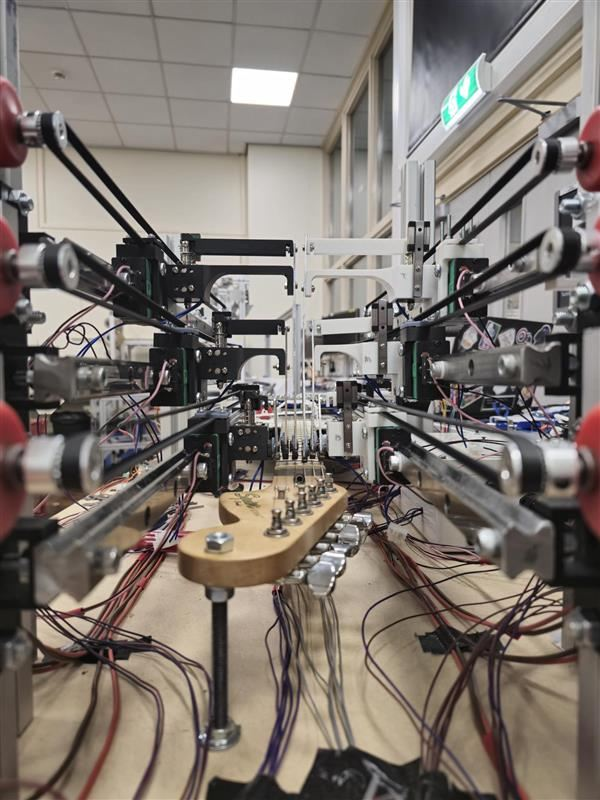
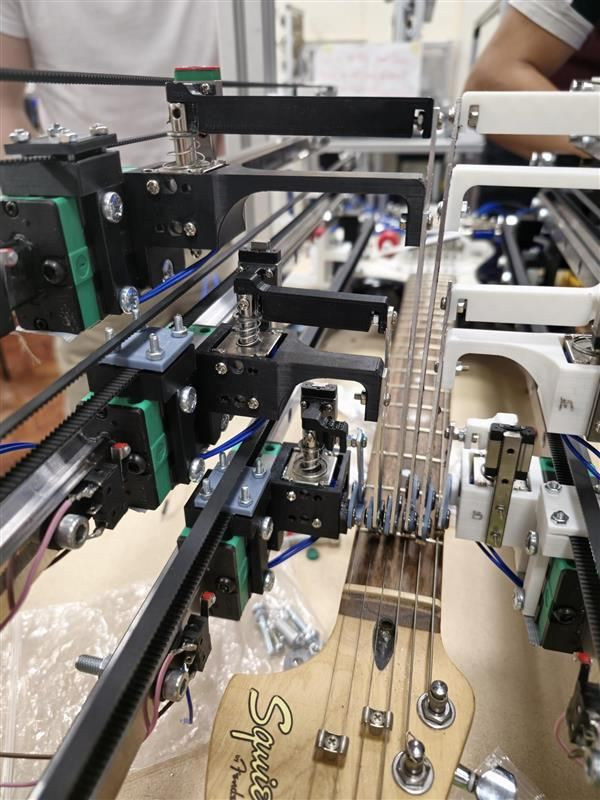
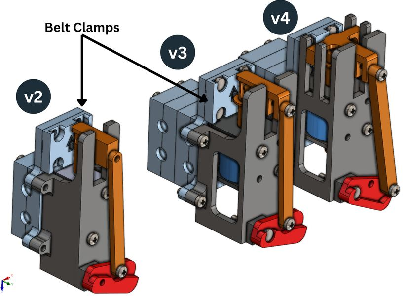
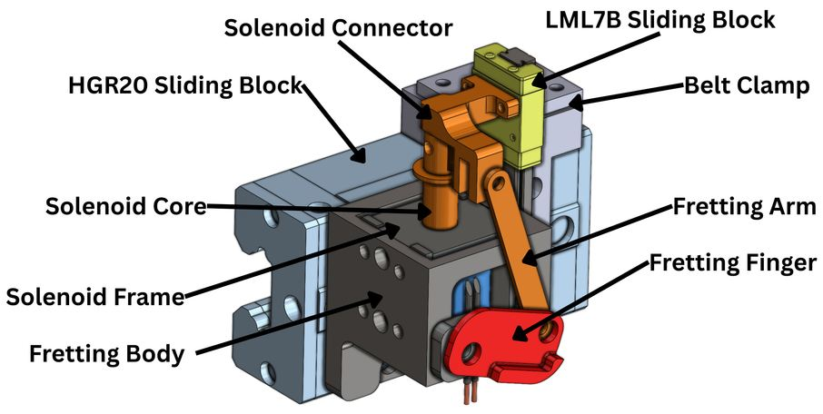
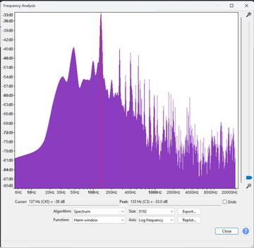
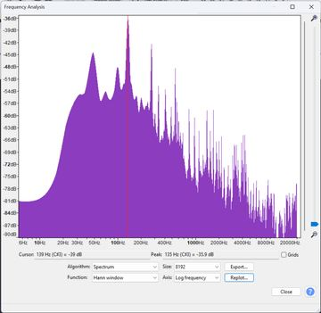

University of Leeds · Team of 5 · Oct 2024 to May 2025
Gave the team's robot guitarist human-level speed. I designed and built the fretting system that presses the strings, and it played at 120 BPM with a 95% tonal match to a human player, all within a £200 budget.
Speed
Human-level playing speed
The fretting system kept up at 120 BPM.
Sound
95% tonal match
Spectrum analysis matched a human player, both peaking at C#3.
Budget
Delivered under £200
The whole subsystem came in within its budget.
Iteration
Refined to version 5
The final mechanism is the fifth iteration of my design.
Design, build and control a robot that plays an unaltered six-string electric guitar, as part of a robotic band for showcases.
The fretting fingers had to be under 5.3 mm wide to fit between frets, adjust to how far each string deflects, and stay robust and easy to service.
Owned the pitch-shifting (fretting) system. I engineered fingers driven by 25 N solenoids, carried on motor-driven belt and pulley carriages with adjustable geometry.
The carriages run on an aluminium extrusion linear rail system with custom 3D printed parts, which I iterated through five versions and integrated with the team's software and electronics.
The system met its specification: repeatable force on every string, human-level speed at 120 BPM and a 95% tonal match.
It came in under its £200 budget.
| Result | 120 BPM, 95% tonal match |
|---|---|
| My subsystem | Pitch shifting (fretting) |
| Actuation | 25 N solenoids on motor-driven belt carriages |
| Structure | Aluminium extrusion linear rails, HGR20 and LML7B sliding blocks, custom 3D printed parts |
| Constraint | Finger profile under 5.3 mm, adjustable for string deflection |
| Budget | Under £200 |
| Team | 5 students, Oct 2024 to May 2025 |


Engineering the fingers
Five iterations led to the final fretting unit. Recordings then confirmed it sounded like a human player.




A human and the robot fretting the same note produce practically identical spectra, both peaking at C#3. That is the evidence behind the 95% tonal match.
Contact